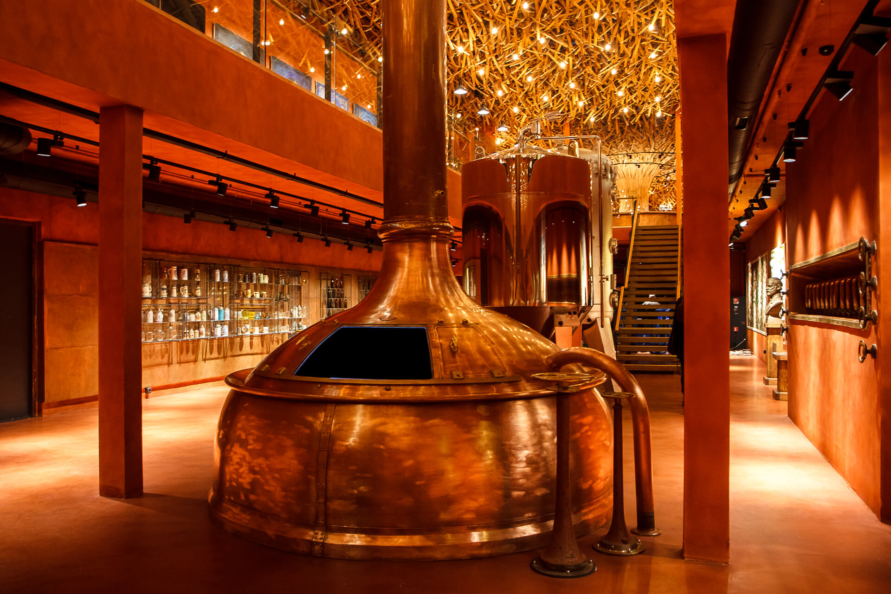
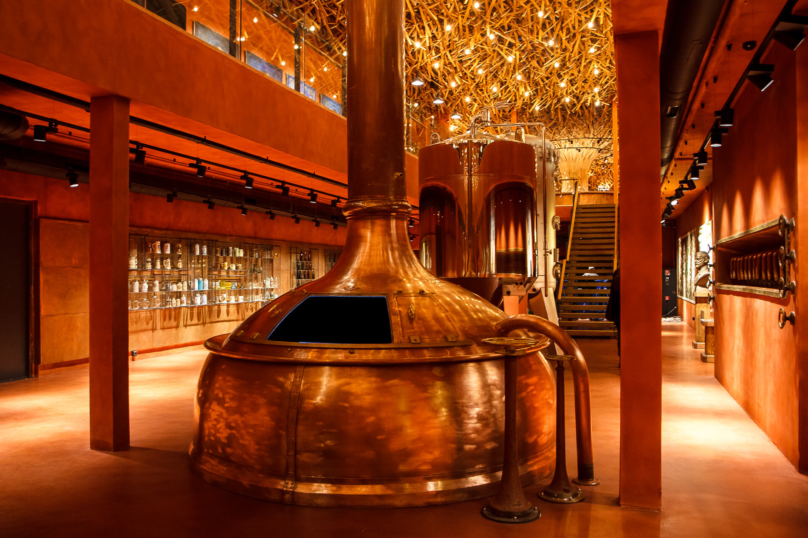

“Львіварня” – інтерактивний музей пивоваріння та сучасний арт-центр, де відбуваються виставки, концерти та різноманітні культурні події. Завдяки інтерактивним експонатам музею кожен з відвідувачів може відчути себе справжнім пивоваром, «доторкнутися» до історії пива та «зазирнути» в процес пивоваріння. Для всіх бажаючих є чудова нагода продегустувати пиво.
Окрім того, що “Львіварня” діє як музей пивоваріння, це місце є сучасним арт-центром, де відбуваються виставки мистецтва, конференції ,концерти. Це своєрідна відкрита платформа для митців, мистецтва та суспільства. “Львіварня” запрошує всіх бажаючих дізнатись більше про історію пивоваріння у Львові та відчути справжній смак легендарного пива у місті Лева.
 
